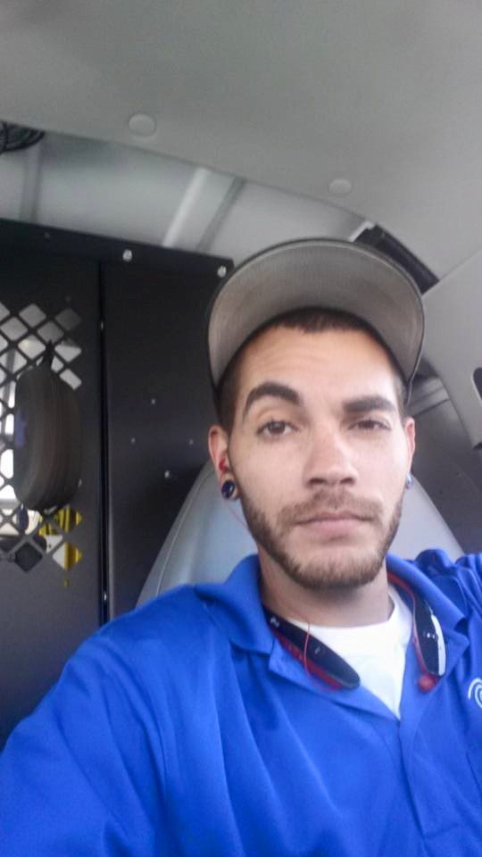

 I have been in IT for 10+ years more focused on the hardware side as opposed to the software side. If you need a network built from scratch, network expasion, or even troubleshooting I'm your guy. The software aspect has always been something of interest to me but in my roles I havent been given opportunities to explore my curiousity. Hence, the UNC Coding Bootcamp! I love learning new technologies and implementing them in everday aspects.
I'm relatively new to Web Developement and currently a student at UNC Chapel Hill Coding Bootcamp where I'm learning to become a software developer. This is an early production of what I hope to tranform later into something more significant, and utilize to showcase some of what I can do! So far in the UNC Coding Bootcamp I've undergone course curriculum pertaining to HTML, CSS, and GIT. I will add more projects to showcase as I create them during the Bootcamp and thereafter.